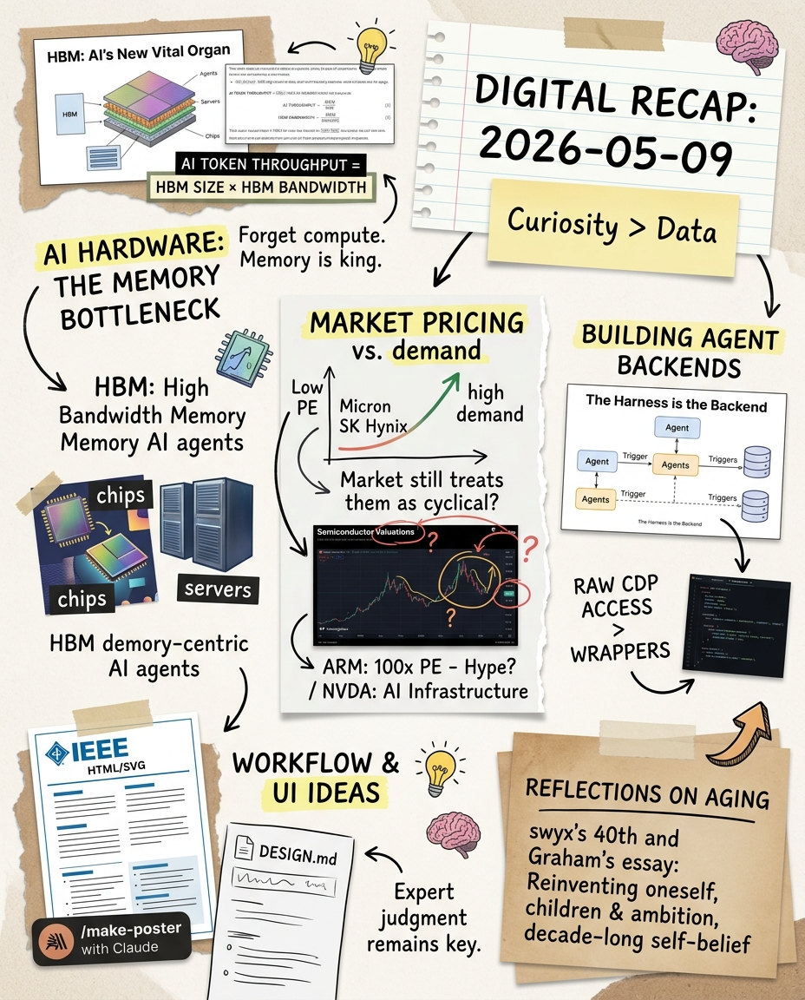

Primary signal
HBM
Token throughput thinking pulled attention from raw compute toward memory size, bandwidth, DRAM, and the supply chain around AI inference.
Your last intake clustered around a single arc: AI systems are becoming memory-bound, markets still price key memory suppliers as cyclicals, and agent architecture is drifting toward simpler worker primitives. Around that technical core, you also collected design-system ideas and long-horizon reflections on work, family, and reinvention.

Token throughput thinking pulled attention from raw compute toward memory size, bandwidth, DRAM, and the supply chain around AI inference.
Micron and memory peers looked unusually cheap versus growth, but the key uncertainty remains whether “cycle” or “paradigm” is the right frame.
Agent systems appeared less like wrappers around models and more like first-class backend workers connected by triggers and functions.
HBM size × bandwidth showed up as the practical ceiling for token factories.
Memory companies look inexpensive relative to AI demand, but cyclicality still caps multiples.
Less “framework,” more raw capability and shared infrastructure primitives.
IEEE-style posters and DESIGN.md connect coding agents to stronger visual outputs.
Memory names show low FY2 P/E and PEG despite AI/HBM demand. The useful question is not “cheap?” but “can the cycle framing break?”
A practical bridge between agent coding and designed output: generate artifact pages/SVG posters as part of the build workflow.
Connect the memory thesis to entry timing instead of only narrative conviction.
Give local agents durable visual rules for future generated dashboards and posters.
Treat parser, database, and agent as independent workers connected by triggers.
Use agents for scaffolding/refactoring/tests while reserving expert judgment for architecture.
The day was about infrastructure becoming visible: memory behind AI, workers behind agents, design files behind generated UI, and time constraints behind ambition.